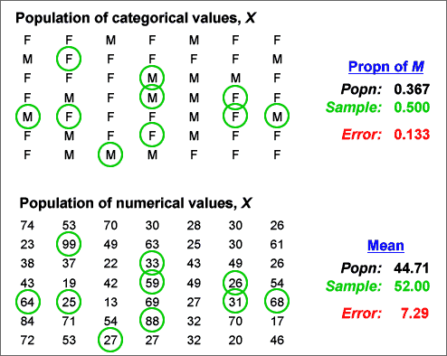
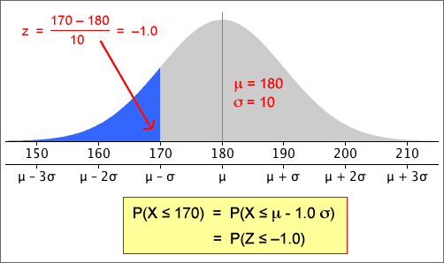
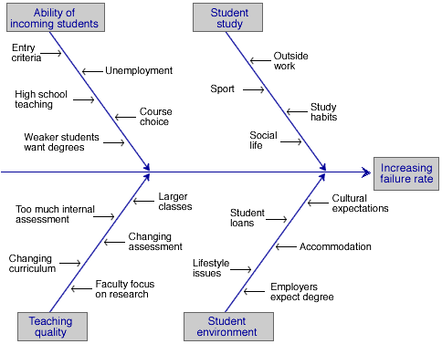

If you don't want to print now,
Population and census
We often want to find information about a particular group of individuals (people, fields, trees, bottles of beer or some other collection of items). This target group is called the population.
Collecting measurements from every item in the population is called a census. A census is rarely feasible, because of the cost and time involved.
Simple random sample
We can usually obtain sufficiently accurate information by only collecting information from a selection of units from the population — a sample. Although a sample gives less accurate information than a census, the savings in cost and time often outweigh this.
The simplest way to select a representative sample is a simple random sample. In it, each unit has the same chance of being selected and some random mechanism is used to determine whether any particular unit is included in the sample.
Sampling from a population of values
It is convenient to define the population and sample to be sets of values (rather than people or other items). This abstraction — a population of values and a corresponding sample of values — can be applied to a wide range of applications.
Sample information about the population
In practice, we only have a single sample and this provides incomplete information about the population.

Effect of sample size
Bigger samples mean more stable and reliable information about the underlying population.
Estimating means and proportions
A random sample is often used to estimate some numerical characteristic of the population, such as...
The difference between an estimate and the population value being estimated is called its sampling error.

Bar charts and the law of large numbers
The law of large numbers states that sample proportions approach the underlying probabilities as the sample size increases. This means that a sample bar chart will be close in shape to the unknown population bar chart if the sample size is big enough.
Histograms and probability density functions
The situation is a little more complicated for continuous numerical populations and samples. A standard histogram could be used to describe the population in the same way that it might be used for a sample:

However with an infinite population, we can narrow the histogram classes beyond what would be reasonable for a finite sample. Indeed, class widths can be reduced indefinitely, resulting in a smooth histogram called a probability density function. This is often abbreviated to a pdf.

Probability density functions are still essentially histograms and share all properties of histograms.
Shape of a probability density function
A probability density function is usually a fairly smooth curve, though a single sample histogram provides limited information about its likely shape.

A value can be generated from a rectangular distribution with the Excel function "=RAND()" or, by hand, by generating a sequence of random digits (e.g. by rolling a 10-sided die).
Generating a categorical value
A random category can be generated from a rectangularly distributed random value, r .
If P(success) is denoted by the symbol π, then a success will be generated if r is less than π. This can be generalised as illustrated in the diagram below:

A random position within the rectangle is generated with a random rectangular horizontal and vertical positions. If it lies within the density function, the x-coordinate is the generated value. Otherwise more positions within the rectangle are generated until a point is found within the density function.

can badly underestimate the variability (and hence accuracy) of the sample mean of dependent random samples.
Always check that a random sample is independently selected from the whole population before using the formula for the standard deviation of the sample mean.
Sampling with replacement from finite populations
When a random sample is selected with replacement from a finite population, the sample values are independent and the standard deviation of the sample mean is again
 =
= 
Note however that the population standard deviation, σ, uses divisor N, the number of values in the population, rather than (N - 1).
Sampling without replacement from finite populations
When a sample is selected without replacement, successive values are no longer independent — if a large value is selected, it cannot be selected again, so the next value will tend to be lower.
For sampling without replacement, a different formula should be used for the standard deviation of the sample mean:

The quantity (N - n) / (N - 1) is called the finite population correction factor. It can usually be ignored if only a small fraction of the population is sampled (say under 5%).
Normal distribution parameters
The family of normal distributions consists of symmetric bell-shaped distributions that are defined by two parameters, µ and σ, the distribution's mean and standard deviation.
Normal distributions as models for data

or equivalently,
x = μ + z × σ
Probabilities and z-scores
Any probability (area) relating to a normally distributed random variable, X, can be expressed in terms of z-scores:

If X has a normal distribution, then Z has a standard normal distribution with mean µ = 0 and standard deviation σ = 1.
Probabilities for the standard normal distribution
After translating a probability about X into one about a z-score, it is easier to evaluate it.

The fact that both x and p are approximately normally distributed in large samples is justified below.
Proportions and means
If we assign a code of '1' to the successes and '0' to the failures in the random sample, then the resulting values are called an indicator variable. Its mean is identical to the proportion of successes.

Since the proportion of successes in a sample is a kind of mean, its distribution is close to a normal distribution if the sample size is large enough.

Sampling frame
Before taking a simple random sample or stratified random sample, a complete list of all individuals in the target population must be available. This is called a sampling frame.
Cluster sampling
If a complete sampling frame is not available, it may be possible to group the target individuals into reasonably small groups, called clusters, for which a complete list is available.
Clusters are similar to the strata that are used for stratified sampling, but are usually much smaller. For example, a cluster might contain all of the houses in a street, or all of the individuals in a household. It is not necessary to know beforehand how many individuals are in each of the clusters.
For cluster sampling, a simple random sample of clusters is selected, with all individuals in these clusters selected.
Cost advantages
Even when a complete sampling frame is available, cluster sampling might be used to reduce the cost of sampling (or to increase the sample size for the same cost) since it is often cheaper to record information from individuals in the same cluster than from different parts of the sampling frame.
Accuracy of cluster sampling
The disadvantage of cluster sampling is that estimates are usually less accurate than the corresponding estimates from a simple random sample of the same size.
However the cost advantages would permit a larger sample size, so cluster sampling may give the best estimates for a fixed cost.
Sampling from large populations
Two-stage sampling is a sampling scheme that is related to cluster sampling, but is of most use for large populations when the individuals are very widely separated in some sense. For example, many polls are conducted to obtain national information about voting intentions or consumer purchases, and there is a high cost associated with travelling between different regions.
In two-stage sampling, the population is separated into groups of adjacent individuals called primary sampling units. These primary sampling units are typically large — for example a country might be split into 20 or more regions. A small number of these are selected according to some sampling scheme, then individuals are sub-sampled within each selected primary unit.
Costs are reduced by limiting sampling to a small number of primary units. For example, if individuals are only sampled from within say 5 regions, travelling and accommodation costs will be considerably reduced.
Estimation
The aim of sampling is usually to estimate one or more population values (parameters) from a sample. Because we do not have complete information about the population, the estimate is unlikely to be exactly same as the value that we are estimating, so we call the difference the error in the estimate. There are different kinds of error.
Sampling error
We have presented four different ways to sample from a population
Each of these involves randomness in the sample-selection process. The error caused by randomness in the sampling process is called sampling error.
Non-sampling error
When sampling from some types of population — especially human populations — problems often arise when conducting one of the above sampling schemes. For example, some sampled people are likely to refuse to participate in your study.
Such difficulties also result in errors and these are called non-sampling errors. Non-sampling errors can be much higher than sampling errors and are much more serious.
It is therefore important to design a survey to minimise the risk of non-sampling errors.
'Missing' responses
The first two types of non-sampling error are caused by failure to obtain information from some members of the target population.
Coverage error
Coverage error occurs when the sample is not selected from the target population, but from only part of the target population. As a result, the estimates that are obtained do not describe the whole target population — only a subgroup of it.
Non-response error
In many surveys, some selected individuals do not respond. This may be caused by ...
If non-response is related to the questions being asked, estimates from the survey are likely to be biased.
'Inaccurate' responses
The next two types of non-sampling error are caused by inaccurate information being obtained from the sampled individuals.
Instrument error
Instrument error usually results from poorly designed questions. Different wording of questions can lead to different answers being given by a respondent. The wording of the question may be such as to elicit some particular response (a leading question) or it may simply be carelessly worded so that it is misinterpreted by some respondents.
Interviewer error
Interviewer error occurs when some characteristic of the interviewer, such as age or sex, affects the way in which respondents answer questions.
There are various different ways to collect information from human populations. Each method has its advantages and disadvantages.
Telephone
Mailed questionnaire
Interviewer
Houses are rarely selected at random. Often streets are randomly selected and every 5th or 10th house in the street is approached. This is called a systematic sample.
Street corner
Some surveys are conducted by approaching people in busy shopping centres or similar public places.
To reduce coverage errors, a quota sample is often used. Each interviewer is told to interview fixed numbers of old, young, male, female, etc. respondents to match the corresponding proportion in the target population.
Self-selected
Phone-in or mail-in surveys are often conducted by radio stations and magazines. The respondents are usually so unrepresentative that the results are meaningless. These types of survey should be avoided.
Statistics for complex problems
In practice, problems are rarely well-defined and there may be various different ways to collect data to throw light on them.
Collection and analysis of data to help attack the problem usually suggest further questions for which further data are required. Several cycles of data collection and analysis are usually needed, with considerable input from an expert in the problem area between each cycle of the process.
Continuous quality improvement
In business and industry, statistics is an important part of the long-term monitoring of performance. We may simply want to ensure that systems continue to perform at their current levels, or the aim may be to improve aspects of the system. The latter is often called continuous quality improvement or total quality management.
Problems in a process are usually detected by collecting and analysing data about the performance of the system. This section describes the use of control charts as a way to monitor processes.
Inherent variability
A certain level of variability in any process is unavoidable. We say that this 'acceptable' level of variability is a result of common causes (or random causes) and if it is the only source of variability, the process is said to be in control.
Systematic changes
Our aim is to detect changes to the output that are not the result of common causes. Such systematic changes are said to be the result of special causes (or assignable causes) and could result in...
Systematic changes usually indicate problems with the quality of the output and the process is said to be out of control.
Run chart
A control chart plots measurements describing the process in time order — a type of time series plot. We hope to use it to quickly detect problems and adjust the process to maintain quality. If a single value is recorded at each time, the control chart is called a run chart. (Other control charts plot sample means and ranges.)
The challenge is to detect systematic changes in the control chart (due to special causes) over the background level of variability (due to common causes).
In the example below, the manager has determined that an output measurement should 'almost always' be between 2,000 and 2,080 with variability in this range considered to be due to common causes. Two out of the last four values were above the upper limit, suggesting a problem with the process that should be investigated and fixed.

By setting the upper and lower control limits to be 3 standard deviations on either side of the process mean, we avoid many 'false alarms' when the process is in control. This is important since values outside the control limits would trigger an examination of the production process — possibly a costly exercise.
Shape of the distribution
The 70-95-100 rule of thumb is most accurate for reasonably symmetric, bell-shaped distributions, though values more than 3 standard deviations from the mean are rare for all distributions. However these control limits should be avoided for very skew distributions — consider transforming the data before producing a run chart.
Additional triggers for an out-of-control process
The most commonly used indication of a process being out-of-control is a value outside the upper and lower control limits (more than three standard deviations away from the centre line). This is sensitive to changes to the process mean or increases in the process variability.
Additional triggers have been proposed that are also sensitive to systematic changes in a process. These are all based on successive values within 1, 2 or 3 standard deviations from the centre (Zones C, B or A).

where

Detecting changes to process variability
A control chart of sample means is used to detect shifts in the 'centre' of a process. In a similar way, a control chart to assess whether the process variability has changed can be based on the spread of successive samples.
The most commonly used control chart for process variability is based on the sample ranges.

By separately targetting the process centre and variability with control charts for means and ranges, we can get better indications of any changes in the performance of the process, and we can therefore intervene more promptly to correct potential drops in quality.
Finding the cause of problems
Control charts (and other collected data) may indicate problems with a system. However, after detection of a problem, its cause must be identified in order to rectify it. This is usually a non-trivial exercise and the following tools often help.
Brainstorming
In a brainstorming session, all team members contribute short phrases that are written on either a large sheet of paper or individual scraps of paper (post-it notes are good). The points should be written down without discussion or editing, and all team members should be encouraged to contribute.
Once these ideas have been written down, they must be structured or grouped in some way.
Cause-and-effect diagrams
After possible causes for a problem have been contributed in a brainstorming session, they can be structured in a cause-and-effect diagram (also called a fishbone diagram).

This structuring of possible causes helps to focus attention on the most likely causes and on ones that may be altered in the 'Do' step in the Plan-Do-Check-Act cycle.